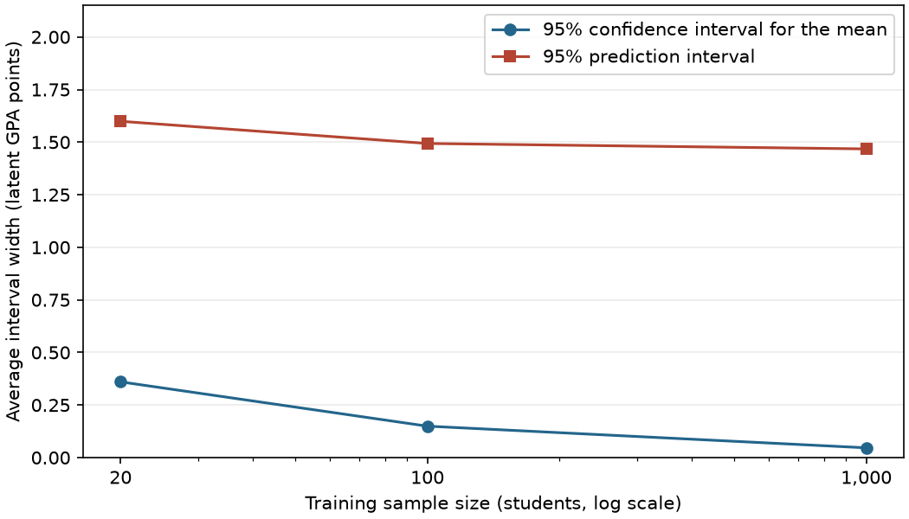

平均の信頼区間と個人の予測区間
単回帰の区間の計算
単回帰で, 母集団の条件つき平均が直線 m(x)=\beta_0+\beta_1x で表され, 誤差は個体どうしで独立とします. \beta_0 は切片, \beta_1 は傾きです. 誤差の分散は X の値によらず一定で \sigma^2 とします. 回帰に使う記号の詳しい一覧は記号表にあります.
標本の説明変数の値 x_1,\ldots,x_n を固定し, その平均を \bar x, 平均との差の二乗和を S_{xx}=\sum_{i=1}^{n}(x_i-\bar x)^2 とします. 標本の大きさは n>2 とし, 説明変数の値にばらつきがあって S_{xx}>0 とします. 標本で観測した目的変数の値を y_1,\ldots,y_n, その平均を \bar y とします. 最小二乗法で求めた直線は標本の平均点 (\bar x,\bar y) を通るので, \hat y(x_0)=\bar y+\hat\beta_1(x_0-\bar x) と書けます. \bar y の分散は \sigma^2/n, 傾き \hat\beta_1 の分散は \sigma^2/S_{xx} です. \bar y と傾きの共分散は 0 です. 傾きを求めるときに y_i に掛ける重み (x_i-\bar x)/S_{xx} の和が 0 になるためです. よって標本の説明変数の値を固定したもとでの分散は次の式になります.
\operatorname{Var}(\hat y(x_0)) =\sigma^2\left\{\frac{1}{n}+\frac{(x_0-\bar x)^2}{S_{xx}}\right\}.
x_0 が標本の平均 \bar x から離れると, 傾きの推定のばらつきが予測値に強く表れます. 新しい個体の Y_0 を予測する誤差の分散には, さらにその個体差の分散 \sigma^2 が加わります.
\operatorname{Var}\bigl(Y_0-\hat y(x_0)\bigr) =\sigma^2\left\{1+\frac{1}{n}+\frac{(x_0-\bar x)^2}{S_{xx}}\right\}.
標本の x_i での当てはめ値を \hat y_i とし, 単回帰の残差を e_i=y_i-\hat y_i とすると, 誤差分散の推定値は s^2=\frac{1}{n-2}\sum_{i=1}^{n}e_i^2 です. 自由度 n-2 の t 分布の 97.5 パーセンタイルを t_{n-2,\,0.975} とします. 条件つき平均が直線で, 独立で分散が一定という誤差の仮定に加え, 誤差が正規分布に従うとき, 次の区間が得られます.
説明変数の値が x_0 のときの母集団の平均 m(x_0) に対する 95% 信頼区間は
\hat y(x_0) \ \pm\ t_{n-2,\,0.975}\, s\sqrt{\frac{1}{n}+\frac{(x_0-\bar x)^2}{S_{xx}}}.
標本を取り直して区間を作ると, 長期的に区間の 95% が固定された母集団の平均 m(x_0) を含みます.
説明変数の値が x_0 の新しい個体 1 つの目的変数 Y_0 に対する 95% 予測区間は
\hat y(x_0) \ \pm\ t_{n-2,\,0.975}\, s\sqrt{1+\frac{1}{n}+\frac{(x_0-\bar x)^2}{S_{xx}}}.
勉強時間から GPA を予測する例では, x_0 に週あたりの勉強時間を指定します. 標本を取り直すたびに区間を作り, その標本とは独立に同じ勉強時間の学生を 1 人取り出すと, 長期的には 95% の回で区間が新しい学生の GPA を含みます.
どちらの区間も中心は \hat y(x_0) です. 予測区間の平方根の中の 1 は, 新しい個体の個体差の分散 \sigma^2 に対応します.
次の図は, 1 つの標本で求めた 2 つの区間を, x_0 を動かして帯として描いた模式図で, 点は実データではありません. 濃い帯が平均の信頼区間, 淡い帯が個人の予測区間です. どちらの帯も x_0=\bar x で最も狭く, \bar x から離れるほど広がります. 予測区間には個体差の分散が加わるので, どの x_0 でも平均の信頼区間より広くなります. 標本の点の多くは平均の信頼区間の外にあり, 平均の信頼区間は一人ひとりの値が入る範囲を表していません.
 重回帰でも, 説明変数の組を指定して得た平均の推定値を中心に, 個体差を加えて予測区間を作ります.
重回帰での計算は未使用のデータで予測の誤差を測るで statsmodels を使って行います.
重回帰でも, 説明変数の組を指定して得た平均の推定値を中心に, 個体差を加えて予測区間を作ります.
重回帰での計算は未使用のデータで予測の誤差を測るで statsmodels を使って行います.
合成データで標本の大きさを変えたときの区間幅
偏回帰係数とそろえる条件で作った架空の学生の母集団では, 奨学生区分, 勉強時間, アルバイト時間の一次式に正規分布の乱数を足して潜在得点を作り, それを 0〜4 点で打ち切った値を観測 GPA としました. この母集団から標本を取り, 勉強時間だけを使って打ち切り前の潜在得点に直線を当てはめます. この生成の仕組みでは, 潜在得点の条件つき平均は直線で, 誤差の分散は勉強時間によらず一定です. 誤差には奨学生区分による差も含まれるので, t 分布を使う区間は正規近似にもとづきます.
標本の大きさを 20 人, 100 人, 1,000 人とし, 大きさごとに同じ母集団から独立に 200 回ずつ標本を取りました. 週 10 時間勉強する学生について, 標本ごとに平均の 95% 信頼区間と 1 人の 95% 予測区間を計算しました. 図の縦軸は区間の上端から下端を引いた幅を 200 回で平均した値です. 横軸は標本の大きさを対数目盛で示しています.

20 人から 1,000 人に増えると, 平均の信頼区間の平均幅は潜在得点で 0.360 点から 0.046 点に縮まりました. 予測区間の平均幅は 1.599 点から 1.468 点に縮まりました. 同じ分布から標本を増やすと, 平均を推定するばらつきは小さくなります. 予測区間の全幅は, 同じ s と t 分布の値で個体差の項だけを使った 2t_{n-2,\,0.975}s 以上です. 標本を増やして平均を精密に推定できても, 個体差に対応する幅は残ります.
観測 GPA の上端や下端の近くでは, 打ち切りによって平均の形も個体差のばらつき方も変わるため, 予測の外れ方は勉強時間によって異なります. 直線を当てはめて作る区間は 0〜4 点の範囲をはみ出すこともあります. 配布した観測 GPA のデータでの確かめ方は未使用のデータで予測の誤差を測るにあります.